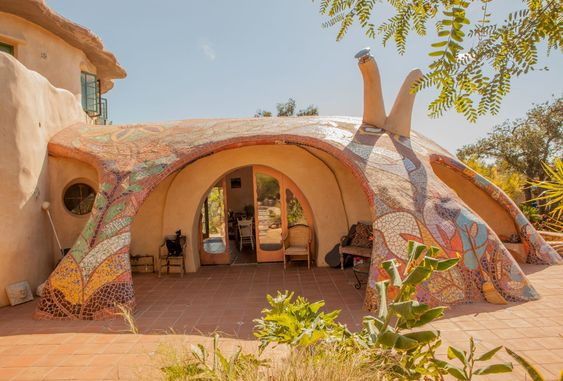
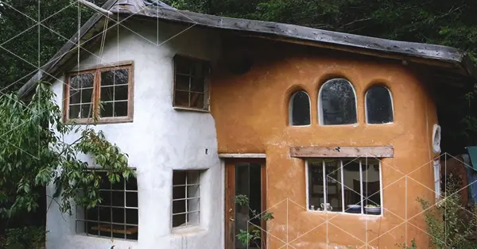
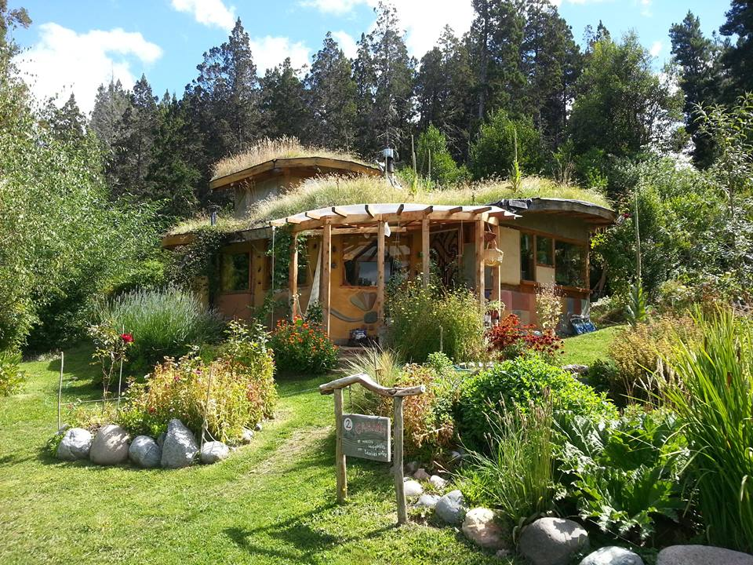
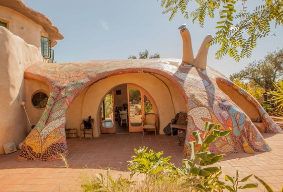
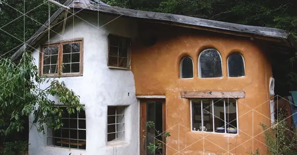
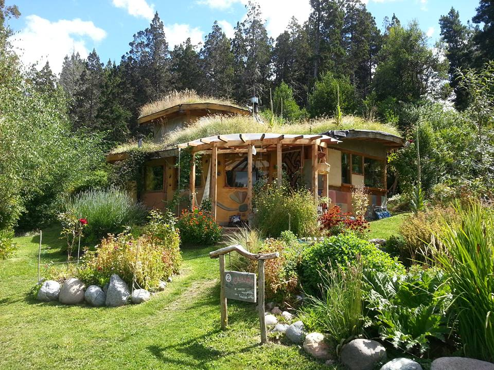
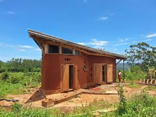
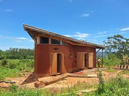

Ricardo Pieto Marino
Especializado em bioconstrução e arquitetura
Itu, SP
Juliana Silva
Salto, SP
Gostaria de solicitar um orçamento para a construção de uma casa sustentável, utilizando materiais naturais e técnicas de bioconstrução, como terra, madeira de reflorestamento e eficiência energética. Tenho interesse em sistemas de captação de água, reuso e acabamentos...
Daniel Souza
Indaiatuba, SP
Estou interessado em construir uma casa sustentável, utilizando materiais ecológicos como madeira de reflorestamento, adobe e técnicas de bioconstrução. Também gostaria de incluir soluções de energia solar, ventilação natural e captação de água da chuva.
Vitória Maria Sanches
Santo André, SP
Tenho interesse em construir uma casa sustentável com grandes janelas para aproveitar ao máximo a luz natural e a ventilação cruzada. Gostaria de utilizar materiais ecológicos, como madeira de reflorestamento, terra e acabamentos naturais. Também estou interessada em soluções de eficiência energética e captação de água da chuva.
Lana Amaral
Osasco, SP
Gostaria de construir uma casa sustentável em uma área pouco iluminada, com foco em maximizar a luz natural através de janelas estratégicas e claraboias. Pretendo usar materiais ecológicos, como madeira de reflorestamento e terra, além de soluções de eficiência energética e captação de água.
Luíz Almeida
Itu, SP
Tenho interesse em construir uma casa sustentável em um ambiente arejado e rodeado pela natureza. Gostaria de utilizar materiais ecológicos, como madeira de reflorestamento e terra, além de focar em soluções que aproveitem a ventilação natural e integrem o projeto ao verde ao redor.
Carlos Souza Andrade
São Paulo, SP
Que notícia incrível! A construção dessa casa ecológica é um exemplo de como é possível aliar conforto e sustentabilidade. Parabéns a todos envolvidos nesse projeto, que serve de inspiração para um futuro mais consciente e responsável!
Mariana Cruz
Elias Fausto, SP
Gostaria de expressar minha imensa gratidão a todos que tornaram poss√≠vel a realiza√ß√£o deste projeto. Cada passo dado foi essencial para alcan√ßar esse objetivo, e sou muito grato pelo apoio, dedica√ß√£o e esfor√ßo de todos. Esse resultado √© fruto de um trabalho conjunto, e estou muito feliz por fazer parte dessa jornada. Muito obrigado! üôè
@_ricardopieto
ricardo.pieto@gmail.com
(19) 78575-0112
 





 
